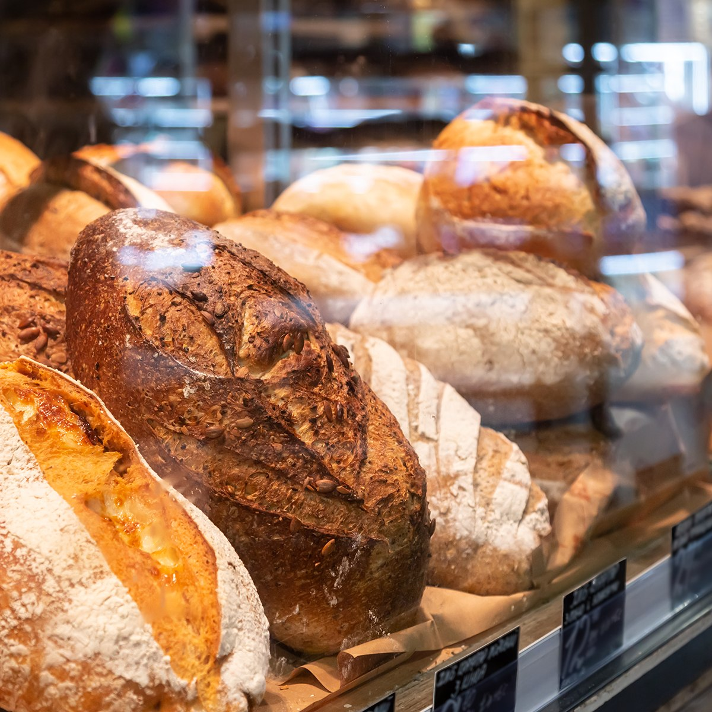

Our story
Meet North Star Bakery
North Star started with a simple idea: give neighbors a place to pick up good bread on an ordinary day. We still shape each loaf by hand and bake in small batches.

How we source ingredients
We look for regional flour and use seasonal fruit when it’s available. When the season changes, so does the pastry case.
Meet the team
Our head baker mixes and shapes bread before the shop opens. The pastry team makes the cookies, rolls, and cakes, and the counter team helps with pickups and preorder questions.
A welcome from the bakery
Welcome to North Star Bakery. Browse our menu for bread, pastries, and cakes, or visit the Contact page for hours and preorder information.